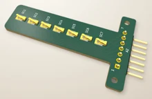

Carrier A3 Through-hole PCB
Kestrel Pocket
USB sideTwo full-size USB-A host sockets for gamepads, keyboards and mice.
Every part soldered to the carrier is through-hole. The Pico lifts out of its sockets. Both full-size USB-A sockets feed a plug-in hub. The Pico has separate serial links to the Tang and Mars for keyboard, mouse and gamepad events. HID firmware and hardware tests are pending.

See the plug-in spring reader ↗